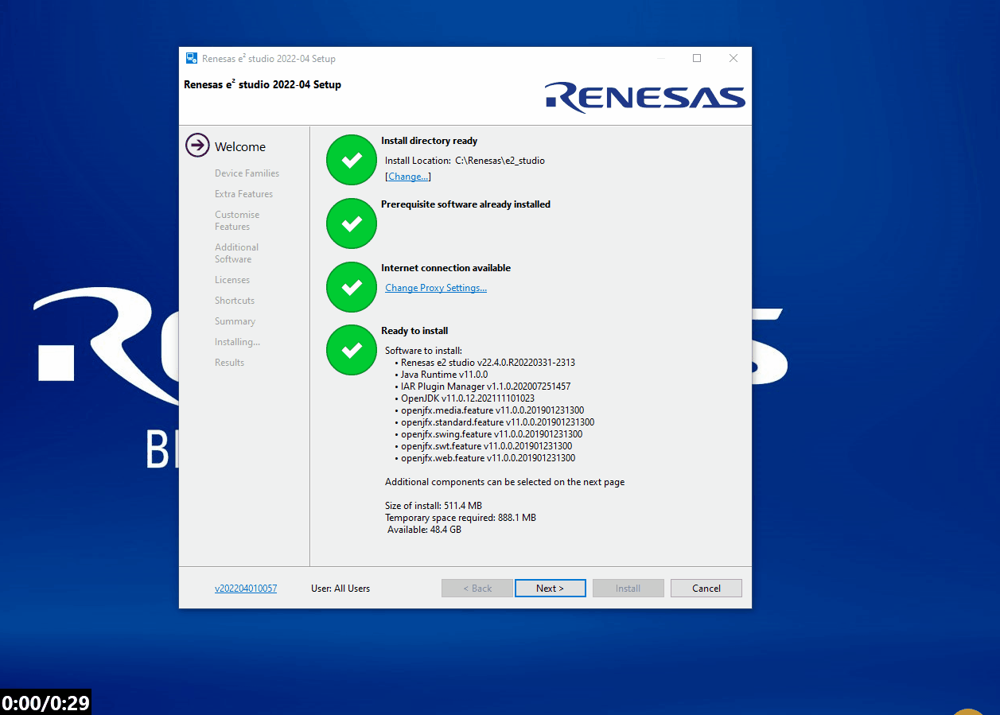
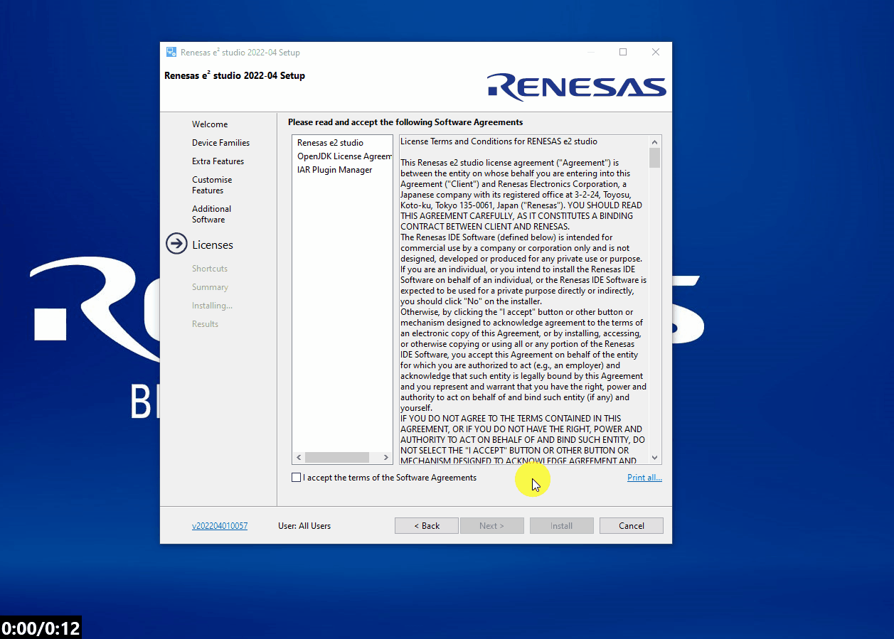

To do this, navigate to the Downloads section and select the latest windows installer for e2studio.
You will be prompted to login to your My Renesas account - please do so.

This lab aims to introduce the Renesas RL78 development tools and provide guidance on the installation specifically for the RL78.
Here we will guide you through downloading and installing e2studio for anyone wishing to develop with the Renesas RL78.
Go to the e2studio landing page and download the latest release.
To do this, navigate to the Downloads section and select the latest windows installer for e2studio.
You will be prompted to login to your My Renesas account - please do so.
Once installed, unzip and launch the installer (this usually works best with admin rights when using a workplace computer).
The installer may take a minute to extract the contents, so please be patient!
If you have multiple installation you will be presented with the option to install or upgrade.
Here I will install to a new location - this is personal preference of having seperate installations of toolchain variants.

I also like to use a non-default install location.
To change the default click [Change...] and browse to the desired location.

There are some non-default components which are very useful to install.
We will go through a somewhat extended custom installation to ensure moving forward you are prepared to start developing with all Renesas tools.
First click [Next >] and select the RL78 family of components.

Then select the Git Integration in Extra Features.

Now moving over to Additional Software, include support for QE for capactive touch and the GCC toolchain.

Finally accept the license agreement (after careful review...) and accept the default selections for the rest of the installation and proceed to install.

To report any bugs or issues with this lab or for any technical querries on the contents - please see the support page.